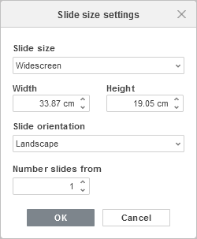
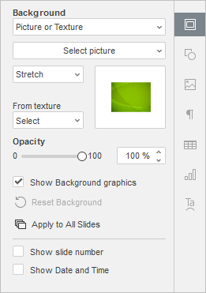
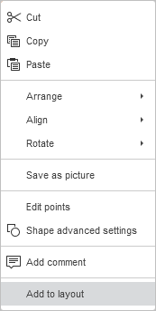
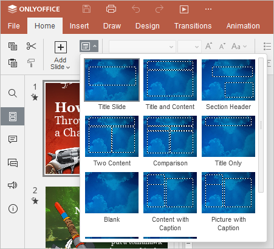

Podešavanje parametara slajda
Da biste prilagodili prezentaciju u Presentation Editor-u, možete izabrati temu, šemu boja, veličinu i orijentaciju slajda za celu prezentaciju, promeniti popunu pozadine ili raspored slajda za svaki pojedinačni slajd, kao i primeniti prelaze između slajdova. Takođe je moguće dodati objašnjavajuće beleške svakom slajdu, što može biti korisno prilikom prikazivanja prezentacije u Presenter režimu.
-
Teme omogućavaju brzu promenu dizajna prezentacije, naročito izgleda pozadine slajdova, unapred definisanih fontova za naslove i tekstove i šeme boja koje se koriste za elemente prezentacije.
Da biste izabrali temu za prezentaciju, kliknite na željenu unapred definisanu temu u galeriji tema sa desne strane gornje trake sa alatkama na kartici Design. Izabrana tema biće primenjena na sve slajdove ako prethodno niste izabrali određene slajdove na koje želite da primenite temu.
Da biste promenili izabranu temu za jedan ili više slajdova, desnim klikom na izabrane slajdove u listi sa leve strane (ili desnim klikom na slajd u oblasti za uređivanje) izaberite opciju Change Theme iz kontekstnog menija i odaberite željenu temu.
-
Šeme boja utiču na unapred definisane boje koje se koriste za elemente prezentacije (fontove, linije, popune itd.) i omogućavaju doslednost boja u celoj prezentaciji.
Da biste promenili šemu boja, kliknite na ikonu Colors na kartici Design gornje trake sa alatkama i izaberite željenu šemu sa padajuće liste. Izabrana šema boja biće istaknuta na listi i primenjena na sve slajdove.

-
Da biste promenili veličinu svih slajdova u prezentaciji, kliknite na ikonu Select slide size na kartici Design gornje trake sa alatkama i izaberite željenu opciju sa padajuće liste. Možete izabrati:
- jedan od dva preseta za brzi pristup – Standard (4:3) ili Widescreen (16:9),
-
opciju Advanced Settings koja otvara prozor Slide Size Settings, u kojem možete izabrati jedan od dostupnih preseta ili postaviti Custom veličinu unosom željenih vrednosti Width i Height.

Dostupni preseti su: Standard (4:3), Widescreen (16:9), Widescreen (16:10), Letter Paper (8.5x11 in), Ledger Paper (11x17 in), A3 Paper (297x420 mm), A4 Paper (210x297 mm), B4 (ICO) Paper (250x353 mm), B5 (ICO) Paper (176x250 mm), 35 mm Slides, Overhead, Banner.
Meni Slide Orientation omogućava promenu trenutno izabrane orijentacije. Podrazumevana orijentacija je Landscape i može se promeniti u Portrait.
Polje Number slides from omogućava podešavanje slajda od kog počinje numeracija slajdova.
-
Promena popune pozadine:

- u listi slajdova sa leve strane izaberite slajdove na koje želite da primenite popunu. Ili kliknite na bilo koji prazan prostor unutar trenutno uređivanog slajda u oblasti za uređivanje da biste promenili tip popune samo za taj slajd.
-
na kartici Slide settings desne bočne trake izaberite željenu opciju:
- Color fill – izaberite ovu opciju da biste odredili punu boju za popunu izabranih slajdova.
- Gradient fill – izaberite ovu opciju da biste popunili slajd sa dve boje koje se postepeno menjaju.
- Picture or Texture – izaberite ovu opciju da biste koristili sliku ili unapred definisanu teksturu kao pozadinu slajda.
- Pattern – izaberite ovu opciju da biste popunili slajd dvobojnim dizajnom sastavljenim od pravilno ponavljanih elemenata.
- No fill – izaberite ovu opciju ako ne želite da koristite popunu.
- Opacity – pomerite klizač ili unesite procentualnu vrednost ručno. Podrazumevana vrednost je 100% i odgovara potpunoj neprovidnosti. Vrednost 0% odgovara potpunoj providnosti.
- Show Background graphics – uklonite oznaku sa ove stavke da biste pojednostavili pozadinu i poboljšali vreme učitavanja prezentacije zbog nižih grafičkih podešavanja.
- Reset Background – vraća pozadinu na podrazumevana podešavanja.
- Apply to All Slides – primenjuje trenutnu pozadinu na sve slajdove u prezentaciji.
Za detaljnije informacije o ovim opcijama pogledajte odeljak Fill objects and select colors.
-
Prelazi pomažu da prezentacija bude dinamičnija i da zadrži pažnju publike. Da biste primenili prelaz:
- u listi slajdova sa leve strane izaberite slajdove na koje želite da primenite prelaz,
-
izaberite prelaz u padajućoj listi Effect na kartici Slide settings,
Da biste otvorili karticu Slide settings, kliknite na ikonu Slide settings sa desne strane ili desnim klikom na slajd u oblasti za uređivanje izaberite opciju Slide Settings iz kontekstnog menija.
- podesite svojstva prelaza: izaberite varijaciju prelaza, trajanje i način prelaska na sledeći slajd,
-
kliknite na dugme Apply to All Slides ako želite da isti prelaz primenite na sve slajdove u prezentaciji.
Za detaljnije informacije pogledajte odeljak Apply transitions.
-
Promena rasporeda slajda:
- u listi slajdova sa leve strane izaberite slajdove na koje želite da primenite novi raspored,
- kliknite na ikonu Change slide layout na kartici Home ili Design gornje trake sa alatkama,
-
izaberite željeni raspored iz menija.
Alternativno, desnim klikom na željeni slajd u listi sa leve strane ili u oblasti za uređivanje izaberite opciju Change Layout iz kontekstnog menija i odaberite željeni raspored.
Trenutno su dostupni sledeći rasporedi: Title Slide, Title and Content, Section Header, Two Content, Comparison, Title Only, Blank, Content with Caption, Picture with Caption, Title and Vertical Text, Vertical Title and Text.
-
Dodavanje objekata u raspored slajda:
- kliknite na ikonu Change slide layout i izaberite raspored u koji želite da dodate objekat,
-
koristeći karticu Insert gornje trake sa alatkama dodajte potreban objekat na slajd (sliku, tabelu, grafikon, oblik), zatim desnim klikom na taj objekat izaberite opciju Add to Layout,

-
na kartici Home kliknite na Change slide layout i primenite izmenjeni raspored.

Izabrani objekti biće dodati u raspored trenutne teme.
Objekti dodati na ovaj način ne mogu se birati, menjati im se veličina ili pomerati.
-
Vraćanje rasporeda slajda u prvobitno stanje:
-
u listi slajdova sa leve strane izaberite slajdove koje želite da vratite u podrazumevano stanje,
Držite pritisnut taster Ctrl i birajte slajdove pojedinačno ili držite pritisnut taster Shift da biste izabrali sve slajdove od trenutnog do izabranog.
-
desnim klikom na jedan od slajdova izaberite opciju Reset slide iz kontekstnog menija,
Svi tekstualni okviri i objekti na slajdovima biće resetovani i postavljeni u skladu sa rasporedom slajda.
-
u listi slajdova sa leve strane izaberite slajdove koje želite da vratite u podrazumevano stanje,
-
Dodavanje beleški slajdu:
- u listi slajdova sa leve strane izaberite slajd kojem želite da dodate belešku,
- kliknite na natpis Click to add notes ispod oblasti za uređivanje slajda,
-
unesite tekst beleške.
Tekst možete formatirati pomoću ikona na kartici Home gornje trake sa alatkama.
Kada pokrenete slideshow u Presenter režimu, moći ćete da vidite sve beleške slajdova ispod oblasti za pregled slajda.